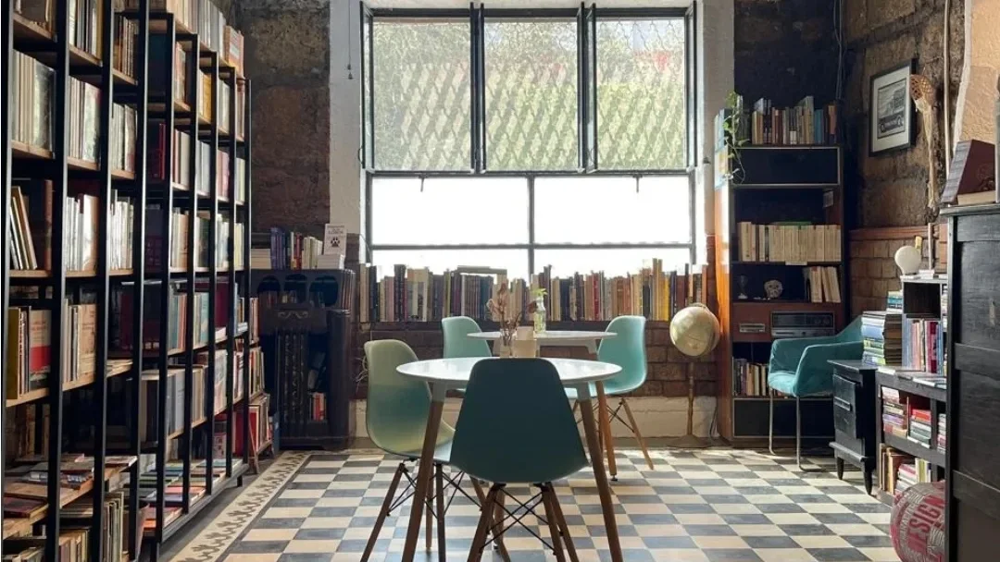

Librería Itinerante y Más
Libros de editoriales independientes, café, eventos y talleres en el centro.
Lun–sáb · 11:00–20:00
Mariano Matamoros Pte. 421 · Centro

Editoriales y espacios con los que compartimos libros y eventos
- Abismos Casa Editorial
- Capítulo Siete
- Iridiscencias
- Ediciones Tres Caminos
- Liminal